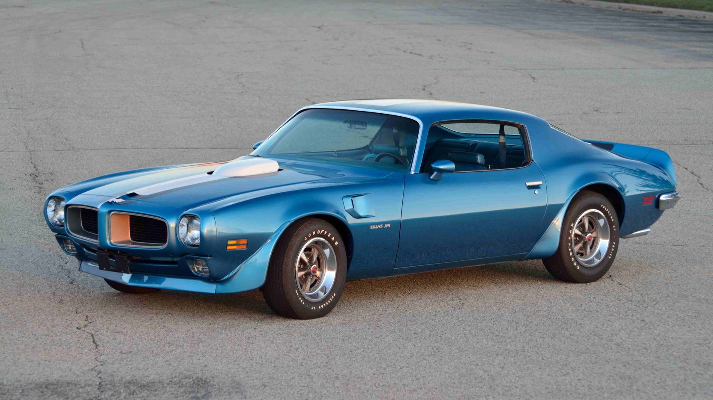
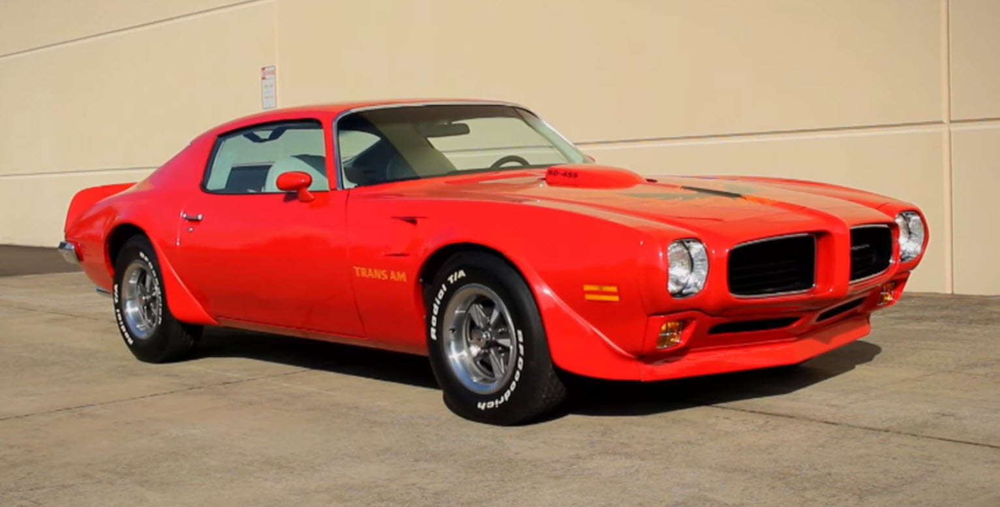
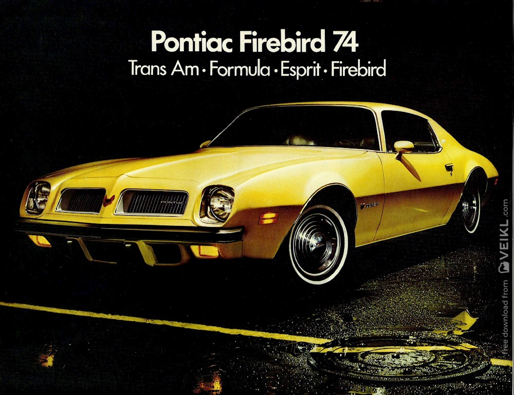
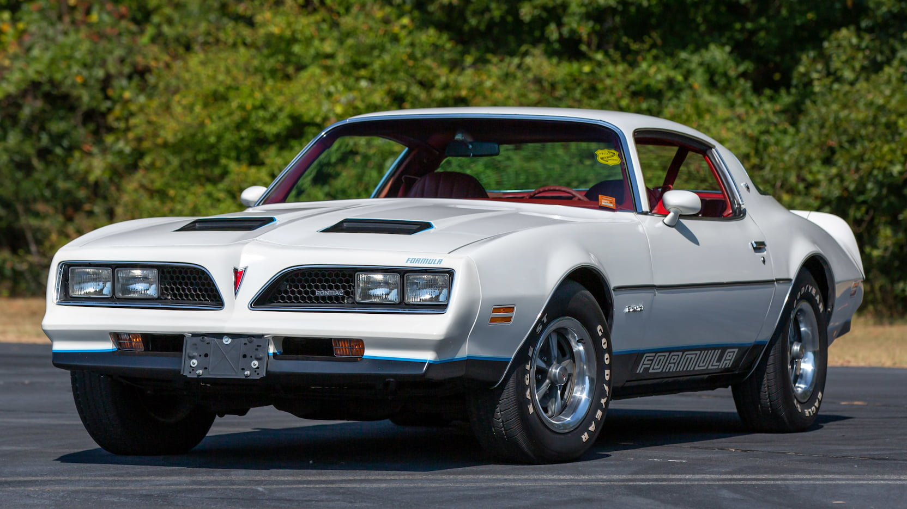
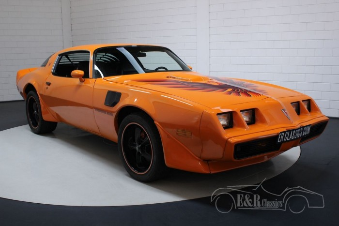
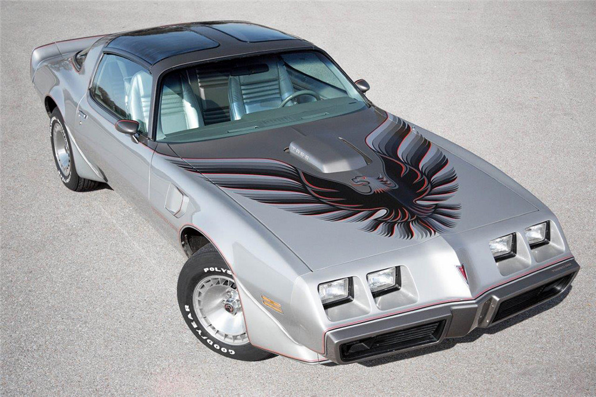
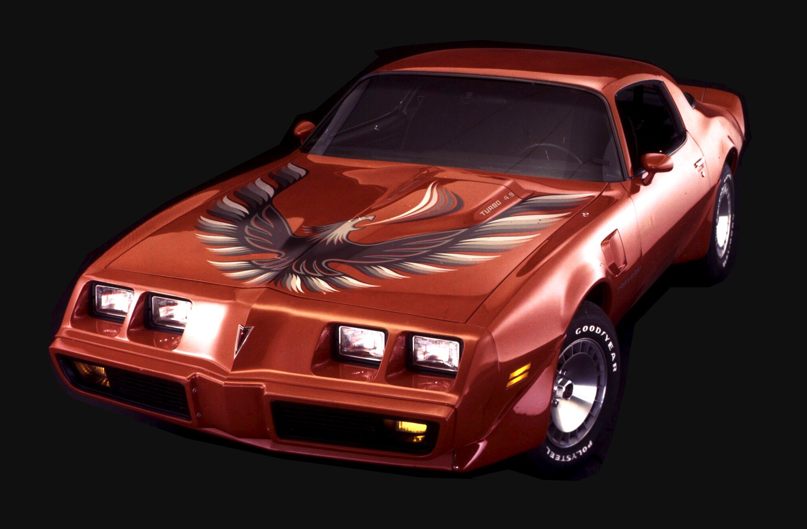

Pontiac Firebird 1967-2002
rövid bevezető:
a Pontiac Firebird egy Amerikai izomautó volt, az F-body
autó platformon épült, amit a Chevrolet Camaróval osztott meg. Több mint 35 éven át gyártották az F-body platform végéig.
Az autó futása alatt sokszor volt sorozatok és filmekben (Smokey és a Bandita, Knight Rider) és még ma is szerepel (Cobra Kai)
kisebb melékszerepekben, de sokszor csúnya véggel.
1967-1969
leírás
1967 február 23.-án adták ki a Firebirdet a Camaro után 5 hónappal. Míg a Camaronak a Mustang volt a nagy ellenfele
a Firebirdnek a Cougar volt ami a Mustang kisebb testvére volt amit Ford alcége a Mercury gyártott. Az első geneáció mind a
3 évben külöbözött föleg 1969-ben amikor egy arcfelvarráson ment át.
motor opciók
- 3.8 L Pontiac SOHC I6 (1967)
- 4.1 L Pontiac SOHC I6 (1968-69)
- 5.3 L Pontiac V8 (1967)
- 5.7 L Pontiac V8 (1968-69)
- 6.6 L Pontiac V8 (1967-69)
modellváltozatok
- Firebird Sprint
- Firebird Sprint 326
- Firebird Sprint 400
- Firebird Sprint HO
- Firebird Trans Am (csak 1969)
Kialakítások
- 2 ajtós Coupé
- 2 ajtós kabrió
1969-es Trans Am és a 8 kabrió Trans Am
amikor bejött a Trans Am 1969-ben csak 697-et gyártottak belőle. Ezek közül 8 kabrió volt, mind a 8 gyűjtök
kezében van. ezeket nem nehéz felismerni mert csak egyetlen szín opcióban jött: fehér kék csíkokkal, a sima és a Sprint
nem jött ebben a szín opicóban.
Képek
1967-es Firebird

1968-as Firebird 400

1969-es Firebird Trans Am

1970-1981
leírás
egy kis félrecsúszás után kiadták a 2. generációs Firebirdet. Nagy külső változáson ment át a Firebird, sokkal több
modellváltozat is lett, a Trans Am még mindig a legerősebb modell volt. 1972-ben egy sztrájk miatt majdnem akkor lett
volna a Camaro és Firebird búcsúdala, de GM végül nem dobta el a kettő F-body kocsit. Ebben a 11 évben 3
ráncfelvarráson ment át a Firebird, leghíresebb az 1977-1978 dizájn. 1973-ban egy jóval erősebb 500$-os (mai árfolyamban
994,408 Forint) Trans Am opciót adtak ki ami 2 évig volt rendelhető, az SD-455.
motor opciók
- 3.8 L Buick V6 (1977-81)
- 4.1 L Chevrolet I6 (1970-76)
- 4.3 L Pontiac V8 (1980-81)
- 4.9 L Pontiac V8 (1977-80)
- 4.9 L Pontiac turbo V8 (1980-81)
- 5.0 L Chevrolet LG3 V8 (1977-81)
- 5.0 L Chevrolet LG4 V8 (1977-81)
- 5.7 L Oldsmobile V8 (1977)
- 5.7 L Chevrolet V8 (1978-79)
- 5.7 L Pontiac V8 (1970-77)
- 6.6 L Pontiac V8 (1970-79)
- 6.6 L Oldsmobile V8 (1977-79)
- 7.5 L Pontiac V8 (1971-76)
modellváltozatok
- Firebird Esprit
- Firebird Formula
- Firebird Trans Am
Kialakítások
SD-455
Az olajkrízis kezdetével miden cég kisebb, gyengébb de sokkal jobb fogyasztású motorokat kezdett gyártani. Viszont Pontiac
még 1973-ban előált azzal az ötlettel, hogy a 7.5L-es V8-asukat megerősítik hogy nagyobb lóerőt adjon ki. Eredetileg 310
lóerőre lett volna képes, de a kormány ezt nem engedte ezért végül csak 290 lóerőre volt képes. 1973-ban 252 SD-455 Trans
Am-et gyártottak. 1974-ben még gyártottak egypárat de csak ebben a 2 évben volt kapható az SD-455 Trans Am.
Ezért ezek ritka gyűjtői darabok.
Smokey és a Bandita
A Firebird első nagy média futása 1977-ben került sor a Smokey és a Bandita című film főkocsija formájában Burt Reynolds
főszereplésével. A kocsik modifikált 1976-os Trans Am-ek voltak 1977-es első lökhárítóval és 1977-es matricákkal.
A film 1977-ben a 2. legtöbbet kereső film volt ennek köszönhetően abban az évben és utána a Firebirdek eladási száma
megduplázódott. 2014-ben Burt Reynolds eladta azt az 1977-es Trans Am-et amit a film forgatása után kapott,
több mint $450,000-ért (mai árfolyamban 141,943,500 Forint).
10. évfordulós Trans Am
A Trans Am model 10. évfordulójára Pontiac kiadott egy speciális Tran Am-et. Mindössze csak 7,500-at csináltak belőle így nem
is ritka de nem is gyakori egy kocsi. Ezek közül 2 Trans Am a Daytona 500-on vot úgynevezett "Pace" kocsi. Ezek a kocsik
közül 1,817 kocsi a 6.6L HO Pontiac V8-assal jött ami kb. 260-280 lóerőre volt képes.
Turbo Trans Am
1980-ban Pontiac-nak meg kellet szabadulni a nagyobb V8-asaitól egyre szígurúbb kibocsátási szabályok miatt. Erre a kompenzáció
vásárlók fele az volt, hogy a 4.9L-es V8-nak volt egy turbocharger opciója. Az annyiból ált, hogy egy
Garrett TB305 turbo-t erősítettek a motor karburátorára. ez az egész egy új stílusú "Turbo domburulat"
motorházetővel valósult meg a turbocharger nagy mérete miatt. Csak autómata váltóval lehetet ezeket kapni. Ezek a kocsik
kb 200-210 lóerővel bírtak.
Képek
1970-es Firebird Trans Am

1973-as Firebird Trans Am SD-455

1974-es Firebird egy reklámplakáton

1977-es Firebird Formula

1979-es Firebird Trans Am

1979-es 10. évfordulós Firebird Trans Am

1980-as Turbo Firebird Trans Am

1982-1992
leírás
3. generációs Firebird szöveg
motor opciók
modellváltozatok
Kialakítások
eredeti motor opciók
GM bad
Recaro Trans Am (1982-1984)
Recaro Trans Am
Knight Rider
Knight Rider
15. évfordulós Trans Am
15.
20. évfordulós Trans Am
20.
Firehawk
Firehawk
Képek
1982-es Firebird SE

1993-2002
leírás
motor opciók
modellváltozatok
Kialakítások
Képek